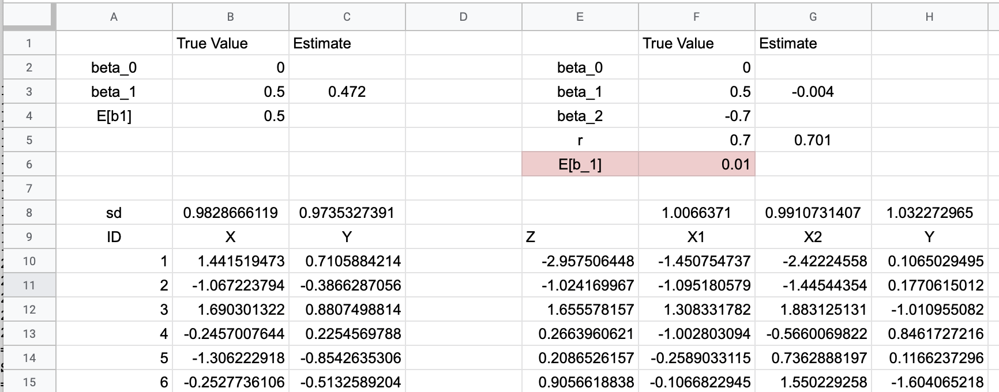

Problem Set 10 Digestion, Nutrition, and Metabolism
10.1 Estimating Causal Effects
Think about headlines in human health, performance and disease: red wine decreases colon cancer, or coffee increases dementia, or oxygenated water increases marathon performance. These “conclusions” constantly seem to be flipping. To understand why, it is important to think about the problem with math. The mathematical way to think about these assertions is X -> Y, or “X causes Y”. Importantly, if a scientist says something like “X causes Y”, this does not mean that X is the only cause of Y – other things may also cause Y. For example: vegetarian diet -> low blood cholesterol AND running -> low blood cholesterol AND statins -> low blood cholesterol.
Most importantly “cause” is not binary (causes v. doesn’t cause) but has some magnitude (trivially small, or small, or big, or huge). Here, we use the greek letter \(\beta\) (“beta”) to indicate effect size.
We are going to use Google Sheets to create fake data that were generated by a known causal process (known \(\beta\)), and then use a statistical model to estimate the causal process (estimate \(\beta\)) from the fake data. The statistical model is regression, which is the principle statistical method used in the biological sciences to estimate causal effects. We are purposefully using abstract notation (X and Y) instead of meaningful variables (dietary cholesterol and atherosclerotic plaque development) because it is good to be able to think abstractly.

10.2 Simulation 1
Open your Google spreadsheet and
10.2.1 Step 1. Set up the parameters
- In column A, cells 2-4, insert “beta_0”, “beta_1”, “E[b1]” (see figure above)
- In row 1, columns B and C, insert “True Value”, “Estimate”
- In B2, insert a number (it doesn’t matter)
- In B3, insert 0.5 (this is the true generating effect of X on Y)
- In B4, insert =B3 (this is the expected value of the generating effect of X on Y given the statistical model)
10.2.2 Step 2. Generate fake data
- In row 9, coumns A-C, insert “ID”, “X”, “Y”
- In A10 insert “1”
- In B10 insert
=normsinv(rand()) - In C10 insert
=$B$2 + $B$3*B10 + sqrt(1-$B$3^2)*normsinv(rand()) - In A11 insert
=A10 + 1 - Highlight cells B10 and C10. Click on the handle on the lower right corner of the box and drag down 1 row. Your formulas from row 10 should now be in row 11.
- Highlight cells A11, B11, C11. Click on the handle on the lower right corner of the box and drag down and down and down until you get to row 1000. You should have copied all three formuilas all the way down.
What is step 2 doing? It is creating fake data. The value is caused by three things, the value in Cell B2, the product of B3 and X, and a random number. The value in B3 is the contribution of X to Y or how “X causes Y” or the “causal effect of X on Y”. If B3 is 0 then there is no causal effect. If B3 is 1 or -1, then the random component is zero.
You have just created fake data with a known generating mechanism! But it is imperative to check the the equations you entered don’t have bugs. If the equations were entered correctly, the standard deviation of the X and Y columns should both be one. Check this
10.2.3 Step 3. Fake data check
- In A8, insert “sd”
- In B8, insert
=stdev(B10:B1000) - Copy B8 and paste in C8.
These numbers should be close to 1.0 (something is probably wrong if it is less than 0.95 or more than 1.05). Refresh the spread sheet by typing command-R (Mac) or control-R (Windows)
10.2.4 Step 4. Does a statistical model recover the known effect?
- In C3, insert
=slope(C10:C1000, B10:B1000) - In C3, round to three places after the decimal
This is the slope of the regression (the statistical model) of Y on X. It is the estimate of the causal effect. The number should be very close to the true value.
This slope is the regression coefficient b1. The cell labeled “E[b1]” is the “expectation of b1” or the expected value of b1. Your estimate of beta_1 should also be very close to E(b1) since E(b1) is equal to the true generating effect (beta_1).
10.2.5 What you did
10.2.5.1 … in a nutshell
you generated \(Y\) using a “data generating” mechanism and then using the available data (X and Y), you used a statistical analysis to see if you could recover this data generating mechanism. The data generating mechanism is the set of two coefficients \(\beta_0\) and \(\beta_1\).
10.2.5.2 the data generating mechaniusm in a little more detail
The fake data are two variables, X and Y. Y is caused by three things:
\[\begin{equation} y_i = \beta_0 + \beta_1 x_i + \sigma_i \end{equation}\]the subscript is the “\(i\)th” individual (if ID=7 then i=7). The three components generating \(y_i\) are
- \(\beta_0\) is “the intercept”; it is common to all \(i\)
- \(\beta_1 x_i\) is the product of the effect (\(\beta_1\)) and an individuals value of \(x\). \(\beta_1\) is the same for all \(i\) but the product is unique to each \(i\).
- \(\sigma_i\) is “the error”; this is the random variation due to other factors that “cause” Y but are unique to each \(i\). That is, these factors are not correlated with \(X\).
10.2.6 The model you fit is
\[\begin{equation} y_i = b_0 + b_1 x_i + e_i \end{equation}\]- \(b_0\) is the intercept
- \(b_1\) is the slope
- \(e_i\) is the residual (the difference between the modeled value and the actual value)
Notice that the statistical model is the same as the generating model. It is not at all surprising that the statistical model “recovers” the data generating mechanism (or the “true values”). The problem in science is, we don’t know the data generating model so we don’t know the correct statistical model. This will hopefully make more sense in the next exercise.
10.3 Simulation 2
10.3.1 Step 5. Set up the parameters
- In column E, rows 2-6, insert the labels “beta_0”, “beta_1”, “beta_2”, “r”, “E(b_1)”
- In row 1, columns F and G, insert the labels “True Value”, “Estimate”
- In F2, insert a number (it doesn’t matter) (this is the baseline value of generating model)
- In F3, insert 0.5 (this is the true generating effect of \(X_1\) on Y)
- In F4, insert -0.7 (this is the true generating effect of \(X_2\) on Y)
- In F5, insert 0.7 (this is the true correlation between \(X_1\) and \(X_2\))
10.3.2 Step 6. Generate fake data
- In row 9, coumns E-H, insert “Z”, “X1”, “X2”, “Y”
- In E10 insert
=normsinv(rand()) - In F10 insert
=sqrt($F$5)*$E10 + sqrt(1-$F$5)*normsinv(rand()) - In G10, copy the equation from F10 and insert into G10
- In H10, insert
=$F$2 + $F$3*F10 + $F$4*G10 + sqrt(1-$F$3^2 - $F$4^2 - 2*$F$3*$F$4*$F$5)*normsinv(rand()) - Highlight cells E10 through H10. Click on the handle on the lower right corner of the box and drag down and down and down until you get to row 1000. You should have copied all four formuilas all the way down.
What is step 6 doing? Like Step 2 in Simulation 1 above, it is creating fake data. But here the \(Y\) value is caused by five things:
\[\begin{equation} y_i = \beta_0 + \beta_1 x_{1i} + \beta_2 x_{2i} + \sigma_i \end{equation}\]- \(\beta_0\) is “the intercept”; it is common to all \(i\)
- \(\beta_1 x_{1i}\) is the product of the effect (\(\beta_1\)) and an individuals value of \(x_1\). \(\beta_1\) is the same for all \(i\) but the product is unique to each \(i\). This is the causal or generating effect of \(X_1\) on \(Y\)
- \(\beta_2 x_{2i}\) is the product of the effect (\(\beta_2\)) and an individuals value of \(x_2\). \(\beta_2\) is the same for all \(i\) but the product is unique to each \(i\). This is the causal or generating effect of \(X_2\) on \(Y\)
- \(\sigma_i\) is “the error”; this is the random variation due to other factors that “cause” \(Y\) but are unique to each \(i\). That is, these factors are not correlated with \(X\).
what is the 5th cause of \(Y\)?
- \(r\) – the correlation between \(X_1\) and \(X_2\). A correlation is a measures of association and is always between -1 and 1
10.3.3 Step 7. Fake data check
- Check the standard deviation of \(X_1\), \(X_2\), and \(Y\) as in Step 3 above. All of these should be close to 1.0
- insert
=correl(F10:F1000, G10:G1000)in G5. This should be close to the true correlation in F5 (The starting correlation is 0.7, so the estimate should be 0.67-0.73)
10.3.4 Step 8. Does a statistical model recover the known effect?
- In G3, insert
=slope(H10:H1000, F10:F1000) - In G3, round to three places after the decimal
- In F6, insert
=F3 + F4*F5
As in Step 4 in Siumulation 1 above, this is the slope of the regression (the statistical model) of \(Y\) on X. It is the estimate of the causal effect. The number will not be very close to the true generating value (\(\beta_1\)), at least using the default values specified in Step 5. But it should be close to E(b1) (the expected value of b1), given the statistical model. But, unlike simulation 1, E(b1) is not similar to \(\beta_1\), the true generating effect. Huh?
- E(b1) should not equal the true value of beta_1 (at least using default values in Step 5), unlike in Simulation 1.
- Your estimate of beta_1 should be very close to E(b1) but not to beta_1
10.3.5 What’s going on is the whole point of this exercise
You have measured \(Y\) and \(X_1\) but have not measured \(X_2\). Because you haven’t measured \(X_2\), it is not in your statistical model, so your statistical model is just like that in Simulation 1.
\[\begin{equation} y_i = b_0 + b_1 x1_i + e_i \end{equation}\]But the generating model for \(Y\) is
\[\begin{equation} y_i = \beta_0 + \beta_1 x_{1i} + \beta_2 x_{2i} + \sigma_i \end{equation}\]That is, your statistical model has an omitted causal variable (\(X_2\)) and your estimate of the effect of \(X_1\) is biased. This kind of bias is called omitted variable bias. The true effect of \(X_1\) on \(Y\) is \(\beta_1\) but you are actually estimating E(b1) with the regression coefficient! Researchers often think their result will get closer to the truth as the sample size increases but if an causal effect is missing from a statistical model, the estimate of the effects of the factors in the model will never ever get closer to the truth - instead it gets closer to the wrong thing (the biased expectation of the effect given the model).
10.4 Questions
10.4.1 Simulation 1
- Given the default parameters specified above, what is the estimated effect of \(X_1\) on \(Y\) in Simulation 1?
- What is the true effect of \(X_1\) on \(Y\) in Simulation 1?
- If you increase your sample size, will the estimated effect of \(X_1\) on \(Y\) move toward the true effect of \(X_1\) on \(Y\) in Simulation 1?
10.4.2 Simulation 2
- Given the default parameters specified above, what is the estimated effect of \(X_1\) on \(Y\) in Simulation 2?
- What is the true effect of \(X_1\) on \(Y\) in Simulation 2?
- If you increase your sample size, will the estimated effect of \(X_1\) on \(Y\) move toward the true effect of \(X_1\) on \(Y\) in Simulation 2?
- If you did a study of \(X_1\) on \(Y\) and the true generating model of \(Y\) is that in Simulation 2, what would you conclude about the effect of \(X_1\) on \(Y\)?
10.4.3 Simulation 2 with new parameters
Redo Simulation 2 with the parameters: \(\beta_1 = 0.0\). Leave \(\beta_2 = -0.7\) and \(r=0.7\).
- What is the estimated effect of \(X_1\) on \(Y\)?
- What is the true effect of \(X_1\) on \(Y\) in Simulation 2?
- If you did a study of \(X_1\) on \(Y\) and the true generating model of \(Y\) is these new parameters in Simulation 2, what would you conclude about the effect of \(X_1\) on \(Y\)?